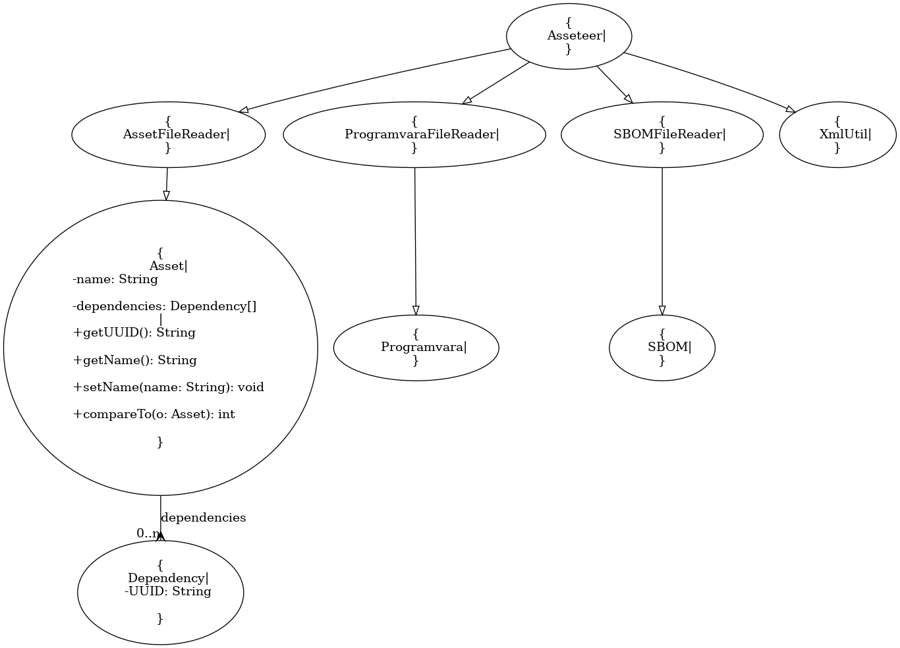

Lightweight Asset Management Projektförslag, tänkt att pågå så långt vi hinner, kanske genom forsätningskursen.
elofturtle produktpelle
Det övergripande målet är att skapa en applikation för att hantera diverse tillgångar, som får genomgå flera iterationer/implementationer.
1 Enanvändarsystem utan db * Kan läsa & spara data i form av XML, CSV. * Sparar sitt globala state som XML * Konfiguration * menybaserad nmatning via konsol 2 Enanvändarsystem med lokal databas (sqlite e.d. istället för XML för state) 3 Kunna söka på flera olika sätt, inklusive med wildcard 4 Riktig databas, programmet kan koppla upp sig mot den även om den inte ligger på localhost 5 Söd för REST-gränssnitt, svar/input via JSON primärt 6 Enkelt webbgränsnitt för visning, sökning, inmatning 7 "rikig" deployment på extern server 8 Fleranvändarstöd, sessionshantering, säkra att man inte skriver över varandras redigeringar. 9 Behörighetshantering (admin/write/read)
Kunna konsumera ett antal cyclonedx-xml:er från en mapp (se tex https://github.com/CycloneDX/bom-examples ) genom att ange sökväg på kommandoraden
Komma fram till format för klientapplikationer (vilka uppfiter den delen behöver kunna hantera
Kunna mata in klentapplikationsdata från en csv genom att ange sökväg på kommandoraden
Kunna mata in, söka, lista, redigera, utgå från tidigare information om klientapplikation
Grundläggande konfiguration för applikationen (hårdkodat, tex var leta efter xml:er för cyclonedx) så att man slipper ange det på kommandoraden
```mermaid classDiagram Asset <|-- SBOM Asset <|-- Programvara Asset <|-- Licens Asset "0..n" *-- Dependency : dependencies
Dependency
<<abstract>> Asset
class Asset{
-String name
-Dependency[] dependencies
+String getUUID()
+String getName()
+void setName(Sring name)
+int compareTo(Asset o)
}
class Dependency{ -String UUID } ```
https://scribesecurity.com/blog/spdx-vs-cyclonedx-sbom-formats-compared/ https://pages.nist.gov/swid-tools/ https://github.com/Labs64/swid-generator https://github.com/swidtags/rpm2swidtag/tree/master Spara state och hantera ev identisk information som ligger i mapp som läses in (är det sparat state eller indatat som gäller i vilken ordning?)
globala grupper p.s.s. som för klientappliaktioner.
Kunna söka & visualisera beroenden cyclonedx validera xml https://www.baeldung.com/java-validate-xml-xsd

Nej, gpt:s forte verkar inte vara den sortens kodanalys.
I eclipse verkar stödet halvt försvunnit, så numera är det kanske främst kommersiella alternativ som gäller.
Om man nu inte går all in och installerar Papyrus.